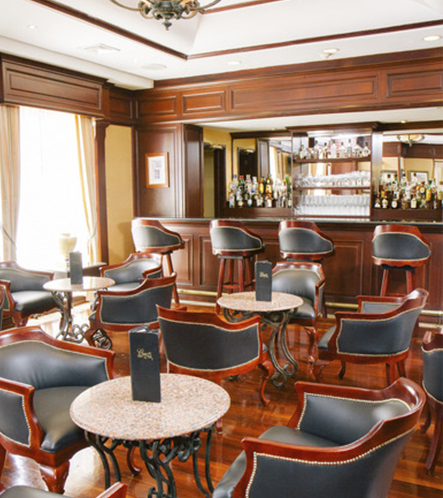
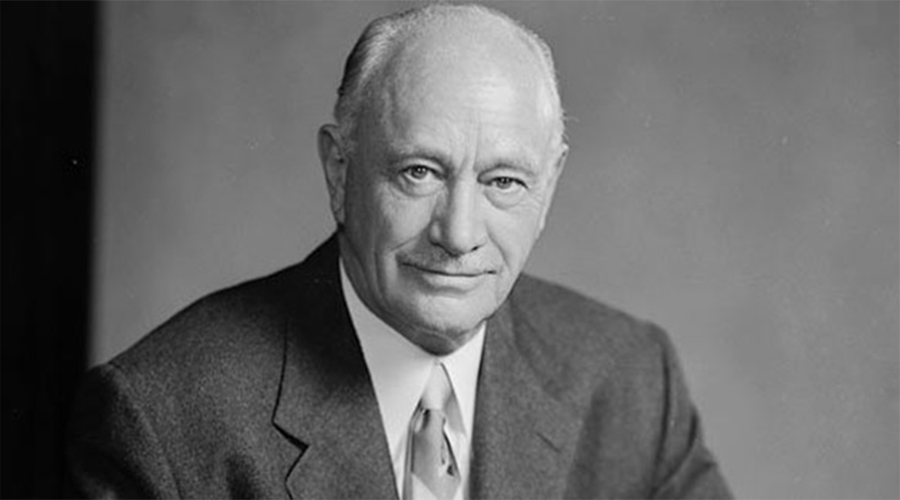
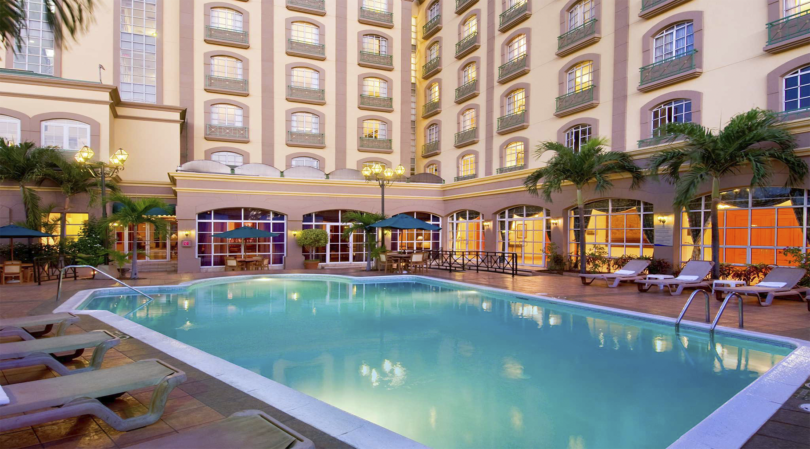

Km 4,5 Carretera a Masaya, Managua, Nicaragua
El hotel Hilton Princess Managua en Nicaragua ofrece una ubicación céntrica en el distrito comercial y entretenimiento de la ciudad, a solo unos pocos minutos del Aeropuerto Internacional de Managua (MGA).
Elija entre 104 elegantes habitaciones, que incluyen tres amplias suites. Todas ofrecen comodidades como WiFi y un televisor LCD.
El hotel Hilton Princess Managua se encuentra en el distrito comercial de la ciudad, a pocos minutos de empresas, como BAC/Credomatic y el Banco Mundial. Realice una reunión o conferencia en el espacio multifuncional para reuniones y banquetes, y permita que los amables miembros del personal se encarguen de los servicios de catering externos.
Nuestra Historia
Nació el 25 de diciembre de 1887 en San Antonio, Nuevo México (USA) y murió el 2 de enero de 1979 en Santa Mónica, California (USA). Tuvo 3 esposas y 4 hijos.
Trabajo junto con su padre en la construcción de un hotel y un almacén en Socorro, Nuevo México, pero luego se mudó a Texas. Es ahí donde se inició en la industria hotelera con la compra de Moble Hotel, en Cisco en el año 1919. Así fue adquiriendo durante ese año una serie de propiedades hoteleras a un bajo precio, ya que estaban en precarias condiciones. Su primer “gran” hotel en Texas fue el Dallas Hilton, al que le siguieron Abilene Hilton, Waco Hilton y El Paso Hilton. Unos años después, inauguró su primer hotel fuera de Texas, que se llamaba La Posada de Alburquerque (Nuevo México).
En el año 1946 creó la Hilton Hotels Corporation, y dos años después la Hilton International Company. La compañía amplió sus servicios al viajero, ofreciendo además de estadía, alquiler de autos y el uso de tarjetas de crédito. Además, Hilton fue la primera cadena hotelera internacional.
Durante la gran depresión en los años 30, la compañía entró en bancarrota y Hilton tuvo que vender muchos de sus hoteles, pero con el tiempo y su recuperación económica, volvió a adquirir.
Conrad pensaba que cada hotel dentro de la cadena debía ser diferente y tener su propio estilo y que parezcan como parte de una cadena. Además de sus aportes en la industria hotelera estadounidense y mundial, Conrad Hilton creo la Conrad N. Hilton Foundation en el año 1944. Esta fundación se preocupa sobre los problemas en el mundo y la sociedad que lo habita, como combatir la pobreza, enfermedades, programas de educación, entre otras.

